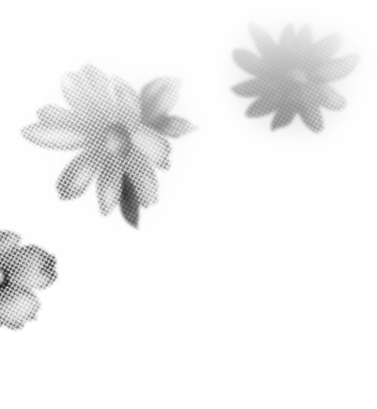
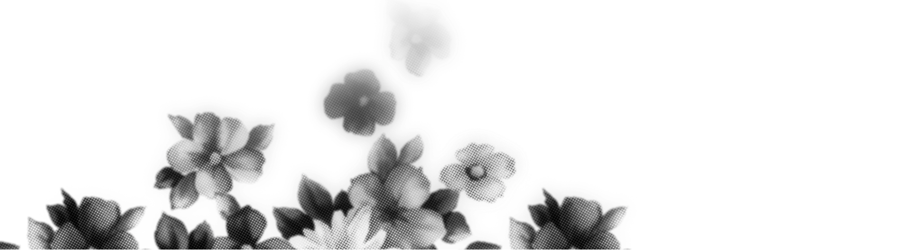
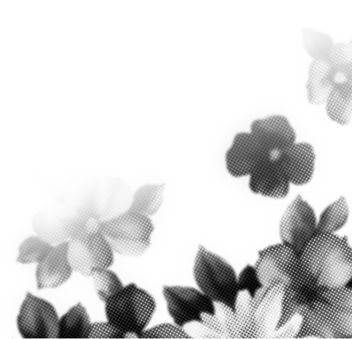
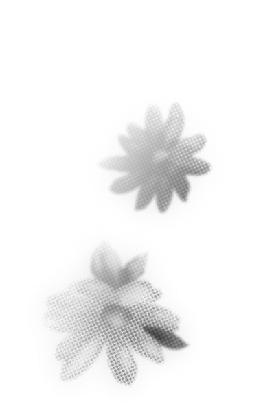
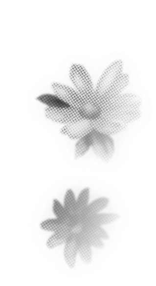

Melnikov Media

Я создаю
МОУШН
СЪЕМКА
МОНТАЖ

Привет! Я режиссер монтажа и оператор постановщик
с более чем 7-летним стажем в видеопродакшне.
Благодаря моим навыкам и опыту, могу реализовать
проекты практически любой сложности.
Этапы работы над видео:
Обработка звука, цветокоррекция, нарезка, разделение на главы Создание уникального стиля (вставки, плашки и т.д.) Музыка без авторских прав и sound дизайн
Опыт: 3D графика, дизайн, съемка видео, промо-ролики, корпоративные, моушн графика.
Работаю в автономном режиме: кидаешь исходники либо организуем съемку, ждешь 1-2 дня, получаешь крутой ролик — никаких сотен правок и нервотрепки, всё на чилле.





проделана:
такую рекламу, будто ее делала целая
команда, чтобы привлечь клиентов и
выйти на новый уровень.
Концепция и реализация: все идеи
и концепты в ролике придуманы и
реализованы лично мной с целью
показать максимум креативности.
Я думаю, самое сложное в ролике -
это как раз придумать концепции для
всех отдельных сцен, это заняло больше
всего времени.
Относительно программ: Premier Pro
(звук), After Effects (графика),
Blender (3D). Также в этом ролике
принял участие диктор - Борис Рыбаков,
ему отдельная благодарность за
прекрасную озвучку.
ПОЧЕМУ Я?
Ответы на вопросы
1. Какие направления?
- В последнее время в большей степени заинтересован в блогерском направлении, но готов рассмотреть как корпоративные ролики, интервью и подкасты, так и промо/креативы.
2. Есть ли опыт ведения соцсетей?
- Да, есть 2 кейса: группа ВКонтакте — 30 тыс. подписчиков, TikTok — 35 тыс. При необходимости готов предоставить доказательства.
3. Есть ли опыт съемки видео?
- Да, снимал концептуальные ролики на Sony a6300. Разбираюсь в тонкостях съемки, таких как композиция кадра, настройки камеры, освещение и т.д.
4. Сколько правок?
- Обычно 3 правки бесплатные, далее идет доплата в зависимости от сложности, но все обсуждается индивидуально. Чаще проекты закрываются без правок.
Я очень замотивированный и
амбициозный человек,
отлично умеющий приспосабливаться
к разным стилям монтажа и визуала.
Так же обладаю операторскими и режиссерскими
знаниями.
У меня есть большой опыт
в различных сферах, связанных как с
монтажом, так и с видеопродакшеном
и дизайном в целом. Я представляю собой
многопрофильного специалиста, который
обеспечивает: скорость, качество и сервис.
Я берусь только за те проекты, в которых
уверен и которые принесут мне удовольствие.
Я очень дорожу своей репутацией, поэтому
при работе со мной никогда нет никаких
казусов, всегда стараюсь идти на уступки.
В общем, обращайтесь!